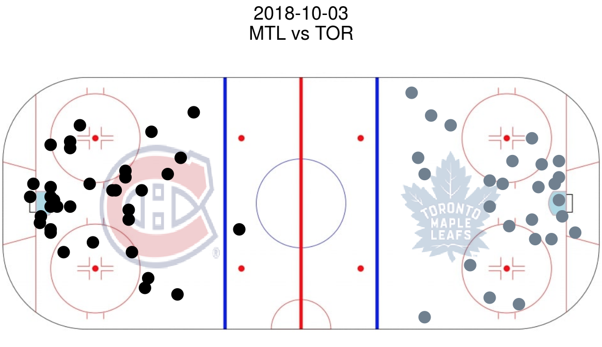
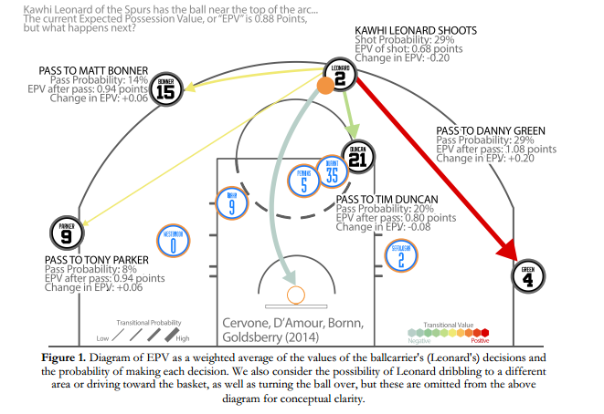
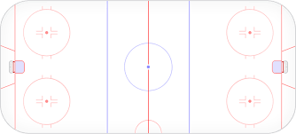
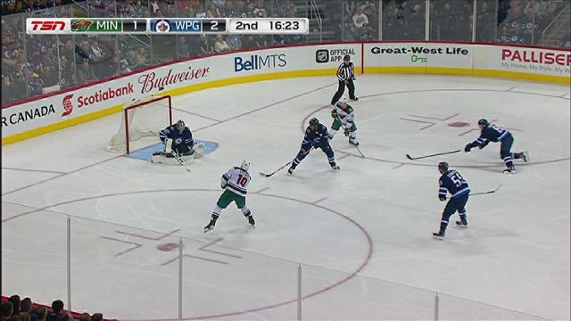

Howard Baek
About Me
Blog
Projects
Blog
Categories
All
(12)
Data Analysis
(5)
Data Visualization
(4)
Research
(2)
Software Engineering
(1)
My R Journal
Software Engineering
Things I learn along my R programming journey.
Howard Baek
Jul 11, 2023
Automatic Detection Method
Data Analysis
We introduce a highly effective algorithm for detecting upwelling, the automatic detection method using NOAA satellite image data.
Howard Baek, Elizabeth Eli Holmes
Oct 26, 2021

Demo of NHL Play-by-Play App
Data Visualization
I will be showing
insights from looking at a regular season game between the Montreal Canadiens and the Toronto Maple Leafs
on October 3rd, 2018
Howard Baek
Aug 20, 2019
Animating Expected Possession Value in the NBA Extended
Data Visualization
I extend a MIT SSAC Research Paper by Cervone, DAmour, Bornn, and Goldsberry on Expected Possession Value or EPV.
Howard Baek
Jun 15, 2019

Animating Expected Possession Value in the NBA
Data Visualization
I extend a MIT SSAC Research Paper by Cervone, DAmour, Bornn, and Goldsberry on Expected Possession Value or EPV.
Howard Baek
Apr 12, 2019

Building the NHL PBP App in Shiny
Data Visualization
I will walk through a month-long process building the National Hockey League Play-by-Play App from scratch, giving a behind-the-scenes look.
Howard Baek
Feb 4, 2019
Quantifying Differences between the Regular Season and Playoffs Extended
Data Analysis
A brief analysis to answer a question by Tom Tango on my article, Quantifying Differences between the Regular Season and the Playoffs
Howard Baek
Jan 28, 2019
Quantifying Differences between the Regular Season and Playoffs using Survival Analysis
Data Analysis
From a casual fan perspective, the intensity traditionally ramps up in the playoffs because teams are closer to the grand prize, the Stanley Cup.
Howard Baek
Jan 7, 2019
Analyzing Twitter Accounts
Data Analysis
I grouped Twitter accounts by popularity measure, a quick and easy way to quantify the popularity of a Twitter account
Howard Baek
Jan 4, 2019
Summary of an Educational Data Mining Paper
Research
Discovery and Temporal Analysis of Latent Study Patterns in MOOC Interaction Sequences
Howard Baek
Jun 28, 2018

Are Teams getting Lucky on Rushes?
Data Analysis
When you watch an offensive rush in hockey, do you ever wonder about the numbers behind it?
Howard Baek
Jun 28, 2018
Wine Quality Prediction
Research
On June 14th, 2018, I participated in a Data Hackathon as part of the REU program at George Mason University.
Howard Baek
Jun 18, 2018
No matching items